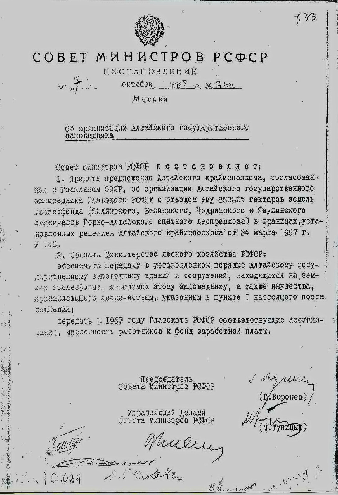

История создания
В 1929 году по постановлению Государственного Межведомственного Комитета по охране и содействию развитию природных богатств на Алтай была направлена научно-промысловая экспедиция под руководством профессора В. И. Баранова с целью обследования территории на предмет организации большого заповедника. По представленному проекту будущий заповедник должен был охватывать огромную территорию свыше 2 000 000 га от Тувы до реки Катунь. Телецкое озеро находилось в центре. Проекту не суждено было воплотиться в жизнь. Его не утвердили.
Постановлением Совнаркома РСФСР от 4 мая 1930 г. заповедник все же был организован. Территория площадью около 1 млн. гектаров, распространялась на правобережье бассейна Телецкого озера и реки Чулышман.
Наркомпросу поручили уточнить границы его расположения, для чего в 1931 году была организована вторая экспедиция под руководством Ф. Ф. Шиллингера.
Работы велись с начала осени до первой половины зимы. Были намечены и обоснованы будущие границы заповедника. Запасы промысловых зверей на обследованной территории оказались сильно подорванными в результате перепромысла несмотря на значительную удаленность района от населенных пунктов.
Экспедиция обосновала и наметила будущие границы, а также установила крайне своевременную необходимость организации заповедника.
Ойротский (Горно-Алтайский) Облисполком 10 декабря 1931 г. и Хаккаский Облисполком 28 декабря 1931 г. специальными постановлениями признали целесообразным организацию заповедника.
Наконец, Совнарком РСФСР в постановлении от 16 апреля 1932 года окончательно утвердил границы Алтайского государственного заповедника. Эту дату и следует считать днем основания заповедника.
В 1951 году 10 сентября Совет Министров РСФСР вынес Постановление «О ликвидации Главного Управления по заповедникам при Совете Министров РСФСР и об упразднении отдельных заповедников», в том числе и Алтайского заповедника.
В 1958 году 24 мая Совет Министров РСФСР дал Распоряжение № 2943-р, в числе ряда заповедников восстановить и Алтайский заповедник, площадью 914 777 гектаров. Летом 1961 году Алтайский заповедник был опять расформирован.
В 1965-1967 гг. научная общественность Сибири и преимущественно Сибирского отделения Академии Наук СССР, Алтайского отдела Географического общества СССР, Алтайского краевого общества охраны природы поднимает вопрос о целесообразности организации Алтайского заповедника в территориальных рамках ранее существовавшего Алтайского заповедника.

В 1967 г. 24 марта Исполнительный Комитет Алтайского Краевого Совета депутатов трудящихся выносит решение об организации Алтайского заповедника, в котором говорится, что в целях сохранения уникального природного комплекса Телецкого озера и Прителецкой тайги, а также учитывая ходатайства краевого общества охраны природы и Главного управления охотничьего хозяйства и заповедников при Совете Министров РСФСР Исполнительный Комитет краевого Совета депутатов трудящихся решил организовать Алтайский государственный заповедник и просить Совет Министров РСФСР решить вопрос об организации Алтайского государственного заповедника. В этом же году Совет Министров РСФСР постановляет организовать Алтайский государственный заповедник.